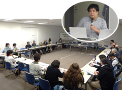
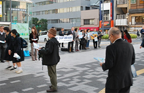
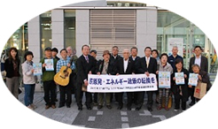
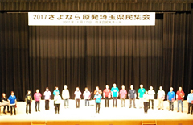
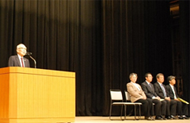
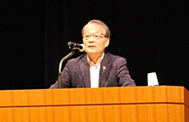
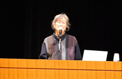
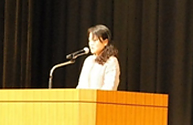

550人が参加、脱原発と再生可能エネルギーへの転換を確認
2017さよなら原発埼玉県民集会実行委員会
11月17日(金)、18時15分より｢2017さよなら原発埼玉県民集会実行委員会｣の主催で「2017さよなら原発埼玉県民集会」を埼玉会館大ホールで開催し、550人が参加しました。10月18日(水)に学習会と脱原発県内地域団体交流会、11月1日(水)浦和駅東口で脱原発や県民集会参加の呼びかけを実施。なお、実行委員会は脱原発を求める県内の18団体・1個人で構成しました。
■学習会｢原発事故被害者が棄民化されている｣と｢脱原発県内地域団体交流会｣
10月18日(水)18時30分～20時30分
学習会は｢原発事故被害者が棄民化されている｣をテーマに、瀬戸大作氏(避難の協同センター事務局)より講演いただき、脱原発県内地域団体交流会では、日常の活動や悩みなど情報交換をしました。20団体27人が参加しました。
■浦和駅東口でアピール
11月1日(水)16時30分～17時00分
JR浦和駅東口にて20人が参加、埼玉合唱団の歌声をバックに｢脱原発！エネルギー政策の転換を｣｢さらなる再稼働反対｣｢11月17日埼玉県民集会への参加｣を呼びかけました。
|  |  |
≪2017さよなら原発埼玉県民集会≫
11月17日(金)18時15分～20時40分
□アトラクション
～～「埼玉のうたごえ協議会」～～
電気ピアノの伴奏で、｢翼をください｣｢一粒の涙｣｢一人から一人へ｣の歌を披露しました。
□主催者団体紹介とあいさつ
田中煕巳(埼玉県原爆被害者協議会会長）
森 和江(埼玉県地域婦人会連合会副会長)
岩岡 宏保(埼玉県生活協同組合連合会会長理事)
伊藤 稔(原水爆禁止埼玉県協議会理事長)
持田 明彦(埼玉県平和運動センター議長)
 主催者を代表し、田中実行委員長が｢原発事故から6年8か月が経ちましたが、日本は原発を再稼働させ、原発エネルギーを利用しようとしているのが残念です。草の根の運動を広げ、原発をなくさなければなりません。今日の講演をこれからの運動のエネルギーにしましょう｣と挨拶されました。
□講演・報告
①｢原発差し止め訴訟と世界のエネルギー事情｣ 河合 弘之さん
(弁護士･脱原発弁護団全国連絡会代表)
 日本の社会問題で一番深刻なのは原発問題であること、｢日本と原発｣｢日本と再生～光と風のギガワット作戦｣の映画製作の背景について、パリ協定から自然エネルギーへの転換が合意されたこと、自然エネルギーが増えれば増えるほど原発は衰退することになること、自然エネルギーを皆さんの手で広めてほしいこと、もうすぐ安全で・仲良く・楽しく・安上がりな自然エネルギーの世界がくること、そして、絶対に忘れてはならないのは福島で苦しんでいる人のことであり、福島の人を助けること、飯館村を再生させることが脱原発につながること、最後に飯館村の歌を紹介されました。
②｢ようやく始まった刑事裁判と福島の今｣ 武藤 類子さん(福島原発告訴団団長)
 2017年6月30日から東京電力福島第一原発事故の刑事責任を問う裁判が始まり企業責任が問われる重要な裁判なのでぜひ注目してほしいこと、放射性物質を含む汚染水が大量に発生し続けていること、大規模な避難区域解除が行なわれていますが安全になったという意味ではないこと、自主避難者の住宅無償提供打ち切りにより起きていれ事例、甲状腺検査の状況、福島県環境創造センターでの子どもや若い人たちに放射線教育、汚染物質の蓄積状況などについて報告され、原発は日本に住む私たち一人一人の問題です締めくくられました。
③｢原発事故からの埼玉での避難生活｣ 河井 加緒理さん
 避難を決意したきっかけは、｢直ちに影響がない｣という言葉と子どもを病気にしたくないと思ったからです。しかし、避難は精神的にも肉体的にも大変でした。避難してもしなくても後悔すると思います。子どもにやさしくできなくなった時期もありました。そんな思いは他の誰にもしてほしくありません。7年前は、ここに立っていることなど想像もしませんでした。原発事故がなければ何をしていたのだろうという思いは一生付きまといます。だから、原発には反対しています。皆の力で原発をなくしていきましょう。
- □募金のお願い
- 佐藤副委員長よりお願いしました。
- □アピール
- 森副委員長より提案し、確認されました。
- □閉会あいさつ
- 持田副委員長があいさつされました。